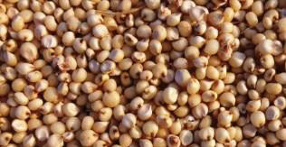

74


Food and Human Nutrition

Form Two
gaining education on feeding practices, individuals caring for children and other community members may also get knowledge about seeking healthcare services when needed, immunization,
supplementation, fortification, sanitation
and hygienic practices.
Nutrition education can be provided in communities, schools and health facilities through peer groups and in the media platforms such as television, radio, posters, fliers and social networks to create nutrition awareness.
(ii) Food fortification
Food fortification is the deliberate
practice of adding micronutrients such as
iodine, zinc, iron, vitamin A, B12 and D to some foods to improve their nutrient
content. For example, salt can be fortified
with iodine. Cereal flour like wheat flour
can be fortified with vitamin B9 and B12 and with minerals such as iron, zinc and calcium. Margarine can also be fortified with vitamin A, B6, B12, D and E.
(iii) Safe water supply, sanitation and hygiene
Safe water supply, proper sanitation and hygiene are important for preventing malnutrition because of their direct impact
on
infectious
diseases.
Ensuring proper sanitation, general hygiene and safe drinking water can reduce malnutrition by preventing the possibilities of getting water-borne diseases that would cause diarrhoea and vomiting. Clean surroundings will also prevent the possibilities of food
contamination thus protecting people from infections and worm infestations.
(iv) Treatment and prevention of diseases
Diseases like malaria and diarrhoea are prevalent in our societies and they can
result in acute malnutrition among young
children. Early detection and treatment of diseases can lead to a quick recovery, prevent complications and save lives.
Provision of quality health care services such as immunization, vaccination, food supplementation, oral rehydration,
periodic deworming, early diagnosis and
proper treatment of common illnesses is essential to prevent malnutrition and reduce the risk of death.
To prevent diseases, ensure safe food
preparation and storage. This will reduce
the risk of microbial contamination in foods, water, utensils and hands. Such contamination may cause diarrhoea, dysentery or other intestinal diseases.
(v) Micronutrient supplementation
Micronutrient supplementation involves the provision of a single micronutrients like iodine, iron, folic acid, vitamin A,
B12, D, zinc or a combination of them in the form of capsules, tablets, syrup or powder. Supplementation provides an optimal amount of a specific nutrient or nutrients in a highly absorbable form. It is also the fastest way to control micronutrient deficiencies in individuals or population groups that have been identified as being deficient or vulnerable to deficiency.

17/09/2025 16:30